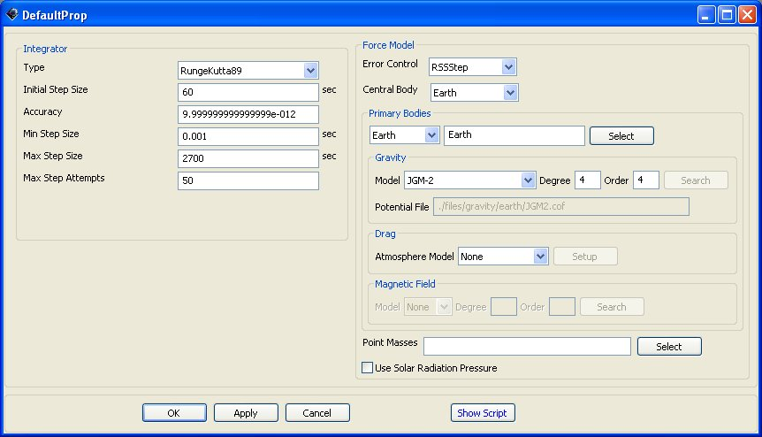

Propagator — A propagator.
Create Propagatornamename.field=value…
In GMAT, a Propagator is a combination of an integrator and a force model. Hence, a Propagator contains a physical model of the space environment that is used to model the motion of a spacecraft as it moves forwards or backwards in time (VOP formulation is not currently supported). You configure a Propagator by selecting among different numerical integrators and environment models to create a Propagator appropriate to the flight regime of your spacecraft during its mission. GMAT supports numerous numerical integrators as well as Force Models like point mass and non-spherical gravity, atmospheric drag (Earth), and solar radiation pressure.
To propagate spacecraft in GMAT, you first create and configure a Propagator object in the script or in the Resource Tree. Then, in the mission sequence, you create a Propagate command, the topic of another section, and select among previously existing Propagators and Spacecraft. Hence, a Propagator is different from a Propagate command: A Propagator is a resource and is found in the GUI under the resource tree, and a Propagate Event is configured under the Mission Tree and is how you instruct GMAT to propagate spacecraft.
The Propagator dialog box is illustrated below and contains two group boxes: the Integrator group and the Force Model group. This section discusses the items in each group on the Propagate Panel. It will present how to configure a propagator and discuss all possible user settable fields in detail.
The Integrator group allows you to select and configure a numerical integrator appropriate to your application. You select the type of numerical integrator in the -+Type+- pull-down menu. After selecting the integrator type, the fields below the -+Type+- pull-down menu dynamically configure to allow you to set relevant parameters for the selected integrator type. All integrators except for Adams-Bashforth-Moulton (ABM) are configured using the same fields. The ABM integrator has the following additional fields: -+MinIntegrationerror+- and -+NomIntegrationerror+-.
The Force Model group allows you to configure a force model appropriate to the flight regime of your application. The central body of propagation and error control method are also defined here. On a Propagator, GMAT classifies all celestial bodies into two mutually exclusive categories: Primary Bodies, and Point Masses. Primary bodies can have a complex force model that includes non-spherical gravity, drag, and magnetic field. Point mass bodies only have a point-mass gravitational force.
You can add a Primary Body by clicking the Select button in the Primary Bodies group box. Once you have added a Primary Body (or mulitiple bodies in future versions), the pull down menu allows you to configure the force model for each Primary Body. The text box, next to the Select button contains a list of all Primary Bodies so you can see which bodies are being treated with complex force models. In future versions, GMAT will support multiple primary bodies on a propagator allowing you to use a non-spherical gravity model for the Earth and Moon simultaneously.
Configuring certain fields in the Force Model group affects the availability of other fields. For example, if you remove all bodies from the Primary Bodies list, the Gravity Field, Atmosphere Model, and Magnetic Field groups are disabled. Similarly, in the Gravity Field group, the search button and the Model File field are only active if "Other" is selected in the -+Type+- pull-down. In the Atmosphere Model group, the Setup button is only active when -+MSISE90+- or -+JacchiaRoberts+- are selected in the -+Type+- pull-down.
GMAT allows you to define Solar flux properties if you select either the -+MSISE90+- or -+JacchiaRoberts+- atmosphere models. By selecting one of these models in the -+Type+- pull-down menu in the Atmosphere Model group, the Setup button is enabled. Clicking on the Setup button brings up the panel illustrated below. Here you can input Solar flux values. GMAT does not currently support flux files though future versions will.
|  |
Figure: Default Name and Settings for the Propagator Object Dialog Box
ErrorControl | The ErrorControl field allows you to choose how a Propagator measures the error in an integration step. The algorithm selected in the ErrorControl field is used to determine the error in the current step, and this error is compared to the value set in the Accuracy field to determine if the step has an acceptable error or needs to be improved. All error measurements are relative error, however, the reference for the relative error changes depending upon the selection of ErrorControl. RSSStep is the Root Sum Square (RSS) relative error measured with respect to the current step. RSSState is the (RSS) relative error measured with respect to the current state. LargestStep is the state vector component with the largest relative error measured with respect to the current step. LargestState is the state vector component with the largest relative error measured with respect to the current state. For a more detailed discussion see the GMAT Mathematical Specification. Units: N/A.
| ||||||
CentralBody | The CentralBody field allows the user to select the origin for the propagation. All propagation occurs in the FK5 axes system, about the CentralBody chosen by the user. The CentralBody must be a gravitational body and so cannot be a LibrationPoint or other special point.
| ||||||
PrimaryBodies | The PrimaryBodies field is a list of all celestial bodies that are to be modelled with a force model more complex than point mass gravity. Lists are surrounded by curly braces. For each PrimaryBody, the user can choose a drag, magnetic field, and aspherical gravity model. There is a coupling between the PrimaryBodies filed and the PointMasses field. A primary body can be any planet or moon not included in the PointMasses field.
| ||||||
Gravity.PrimaryBody.PotentialFile | This field allows the user to define the source for the non-spherical gravity coefficients for a primary body. If a gravity file is located in the Primary Body's potential path as defined in the startup file, you only need to specify the model name and not the entire path. For example, if the JGM2 coefficients file is contained in the directory defined in the startup file by the line EARTH\_POT\_PATH, then you only need to specify the model name JGM2. If the model is not contained in the body's potential path, you must supply the entire path as well as the file name. If GMAT does not successfully find the file requested, it uses the default gravity model as defined in the startup file. From the GUI, only models for Earth appear if Earth is the active primary body. This is to avoid allowing the user to select a lunar potential model for the Earth. If the Other option is selected the user has the ability of selecting a gravity model file on their local computer.
| ||||||
Gravity.PrimaryBody.Degree | This field allows the user to select the the degree, or number of zonal terms, in the non-spherical gravity model. Ex. Gravity.Earth.Degree = 2 tells GMAT to use only the J2 zonal term for the Earth. The value for Degree must be less than the maximum degree specified by the Model.
| ||||||
Gravity.PrimaryBody.Order | This field allows the user to select the the order, or number of tesseral terms, in the non-spherical gravity model. Ex. Gravity.Earth.Order = 2 tells GMAT to use 2 tesseral terms. Note: Order must be greater than or equal to Degree.
| ||||||
Drag | The Drag field allows a user to specify a drag model. Currently, only one drag model can be chosen for a particular propagator and only Earth models are available.
| ||||||
Drag.AtmosphereModel | The Drag.AtmosphereModel field allows a user to specify a drag model. Currently, only one drag model can be chosen for a particular propagator and only Earth models are available.
| ||||||
Drag.F107 | The Drag.F107 field allows you to set the F10.7 solar flux value used in computing atmospheric density. F10.7 is the solar radiation at a wavelength of 10.7 cm.
| ||||||
Drag.F107A | The Drag.F107A field allows you to set the average F10.7 value. F10.7 is the average of F10.7 over one month.
| ||||||
Drag.MagneticIndex | The Drag.MagneticIndex index field allows you to set the kp value for use in atmospheric density calculations. kp is a planetary 3-hour-average, geomagnetic index that measures magnetic effects of solar radiation.
| ||||||
PointMasses | A PointMass is a planet or moon that is modelled by a point source located at its center of gravity. A PointMass body can be any planet or moon not included in the PrimaryBodies field.
| ||||||
SRP | The SRP field allows the user to include the force due to solar radiation pressure in the total sum of forces.
|
Type | The Type field is used to set the type of numerical integrator.
| ||||||
InitialStepSize | The InitialStepSize is the size of the first attempted step by the integrator. If the step defined by InitialStepSize does not satisfy Accuracy, the integrator adapts the step according an algorithm defined in the mathematical specifications document to find an acceptable first step that meets the user's requested.
| ||||||
Accuracy | The Accuracy field is used to set the desired accuracy for an integration step. When you set a value for Accuracy, GMAT uses the method selected in ErrorControl field on the Force Model, to determine a metric of the accuracy. For each step, the integrator ensures that the accuracy, as calculated using the method defined by ErrorControl, is less than the limit defined by Accuracy. If an integrator exceeds MaxStepAttempts trying to meet the requested accuracy, and error message is thrown and propagation stops.
| ||||||
MinStep | The MinStep field is used to set the minimum allowable step size.
| ||||||
MaxStep | The MaxStep field is used to set the maximum allowable step size.
| ||||||
MaxStepAttempts | The MaxStepAttempts field allows the user to set the number of attempts the integrator takes to meet the tolerance defined by Accuracy.
|
MinIntegrationerror | The MinIntegrationerror field is used by the ABM integrator (and other predictor-corrector integrators when implemented) as the desired integration error to be obtained when the step size is changed. Predictor-Corrector integrators adapt step size when the obtained integration error falls outside of the range of acceptable steps, as determined by the bounds set by the MinIntegrationerror and Accuracy fields. The integrator then applies an internal calculation to recompute the step size, attempting to hit the NomIntegrationerror, and restarts the integrator.
| ||||||
NomIntegrationerror | The NomIntegrationerror field is used by the ABM integrator (and other predictor-corrector integrators when implemented) as the desired integration error to be obtained when the step size is changed. Predictor-Corrector integrators adapt step size when the obtained integration error falls outside of the range of acceptable steps, as determined by the bounds set by the MinIntegrationerror and Accuracy fields. The integrator then applies an internal calculation to recompute the step size, attempting to hit the NomIntegrationerror, and restarts the integrator.
|
A Propagator Requires Other Objects/Commands of Type: Force Model (Script Only). (Note: There are slight differences in how you configure a Propagator in the script and GUI and we refer you to the script example shown in the script section for details. Effort has been made to reduce any difference between the script and GUI.)
Create ForceModel DefaultProp_ForceModel;
GMAT DefaultProp_ForceModel.CentralBody = Earth;
GMAT DefaultProp_ForceModel.PrimaryBodies = {Earth};
GMAT DefaultProp_ForceModel.Drag = None;
GMAT DefaultProp_ForceModel.SRP = Off;
GMAT DefaultProp_ForceModel.ErrorControl = RSSStep;
GMAT DefaultProp_ForceModel.GravityField.Earth.Degree = 4;
GMAT DefaultProp_ForceModel.GravityField.Earth.Order = 4;
GMAT DefaultProp_ForceModel.GravityField.Earth.PotentialFile = 'JGM2.cof';
Create Propagator DefaultProp;
GMAT DefaultProp.FM = DefaultProp_ForceModel;
GMAT DefaultProp.Type = RungeKutta89;
GMAT DefaultProp.InitialStepSize = 60;
GMAT DefaultProp.Accuracy = 9.999999999999999e-012;
GMAT DefaultProp.MinStep = 0.001;
GMAT DefaultProp.MaxStep = 2700;
GMAT DefaultProp.MaxStepAttempts = 50;